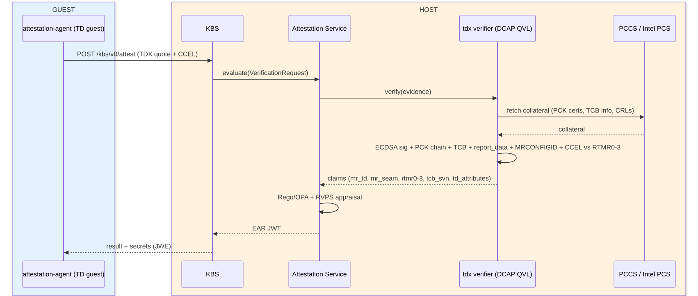

Intel TDX Attestation — Step-by-Step Guide
Version 1.0.0
A guided walkthrough of how to set up and run Intel TDX attestation using tdx-attest.sh. The installation layer is distribution-pluggable (lib/distros/), but for now only SLES/openSUSE are implemented.
Each step explains what happens, why it is needed, and how to verify it worked.
- HOST — the physical machine running the hypervisor. All commands in this guide run here (guest commands are executed remotely over SSH).
- GUEST — the virtual machine that becomes a Trust Domain (TD): its memory is encrypted and its state is measured by TDX hardware.
Quick Start — 10 commands on a ready host
Goal in one sentence: prove to a remote verifier that the guest is a genuine, untampered TDX Trust Domain, and only then hand it a secret.
The happy path (10 commands):
# 1. Host preparation & platform check sudo ./tdx-attest.sh check --check-platform # If platform is unregistered (HTTP 404 on Xeon 6 / Scalable platforms): # sudo ./tdx-attest.sh register-platform --subscription "YOUR_PRIMARY_KEY" sudo ./tdx-attest.sh setup-host sudo ./tdx-attest.sh setup-qgs sudo ./tdx-attest.sh setup-trustee sudo ./tdx-attest.sh setup-vm --guest-iso /path/to/SLE-16.1.iso # 2. Manual: install SLES in the VM virsh console tdx-guest # install from ISO (or any other viewer) sudo ./tdx-attest.sh show-vm-info # get GUEST_IP # 3. Guest preparation + attestation sudo ./tdx-attest.sh attest --guest-ip <GUEST_IP> --register-rv # 4. Secret delivery sudo ./tdx-attest.sh secret-set --file /tmp/my-secret --path default/test/secret sudo ./tdx-attest.sh secret-get --guest-ip <GUEST_IP> --path default/test/secret
kvm_intel.tdx=1 in kernel cmdline) - VT-x enabled in BIOS - SLES 16.1 installer ISO (from SUSE Customer Center) - Internet access to Intel PCS (or a local PCCS cache) - Full prerequisites →
Attestation flow (remote path, as driven by this guide)
- Guest → Host (vsock:1041):
/dev/tdx_guestrequests a TDX quote from QGS - Guest → Host (HTTP:8080):
kbs-clientsubmits the quote to KBS - Host: KBS delegates quote verification to CoCo-AS
- Host: CoCo-AS fetches TCB collateral from Intel PCS (remote) — or from a local PCCS cache when run with
--collateral pccs - Host: CoCo-AS evaluates the quote against reference values from RVPS and signs an EAR token
- Host: KBS evaluates its resource policy (Rego) against the EAR token claims
- Host → Guest (HTTP:8080): KBS releases the secret to
kbs-client
tdx-attest.sh script drives the guest over ssh (setup-guest, attest, secret-get), but the attestation data path itself is vsock (quote) + HTTP (KBS). Diagrams of the full process (guest vs host, local vs remote paths) are in the Attestation Process — Visual Overview section below.
Attestation Process — Visual Overview
A full visual of the process — guest vs host placement, local (DCAP QVL) vs remote (Trustee) verification paths, and the RCAR sequence. The editable source (mermaid) is in intel-tdx-attestation-graph.md; the diagrams below are rendered as SVG so they survive HTML conversion.
Main flow — local vs remote verification (blue = guest, orange = host):

Remote path — RCAR sequence:

Choose your path
| I want to… | Use this |
|---|---|
| Get everything running in one shot | ./tdx-attest.sh all --guest-iso … → jump to Step 6 |
| Understand each layer individually | Steps 1–5 below |
| Debug a broken setup | Troubleshooting |
| Only check if my platform works | ./pccs-check.sh check --auto --tdx |
| Run in an air-gapped / offline environment | --collateral pccs --pccs-url … |
What each step actually changes
| Step | Changes on disk? | Changes network? | Requires reboot? | Can be skipped? |
|---|---|---|---|---|
| 1. Check host capabilities | No | No | No | No (safety gate) |
| 2. setup-host (DCAP stack) | Yes (packages, QCNL config) | No | No | Only if already done |
| 3. setup-qgs (quote signing) | Yes (unit files, socket) | No | No | Only if already done |
| 4. setup-trustee (attestation + secrets) | Yes (3 configs, keys, policy) | Yes (ports 3000/8080) | No | Only if already done |
| 5. setup-vm (create TD) | Yes (disk, XML) | No | No | Only if already done |
| 6. Install guest OS | Yes (guest disk) | No | Yes (guest) | No |
| 7. setup-guest (guest config) | Yes (guest config) | No | No | Only if already done |
| 8. attest (remote attestation) | No (read-only) | Yes (vsock→QGS→PCS) | No | Only if already done |
| 9. secret-get (secret delivery) | No | Yes (guest→KBS) | No | Only if already done |
| 10. verify (consistency check) | No | No | No | Recommended anytime |
| 11. clean (cleanup) | Yes (destroys VM) | No | No | Only when done |
Source Code
The source code for these scripts is hosted on GitHub:
- Repository: https://github.com/aginies/coco_tdx
- Tarball: https://github.com/aginies/coco_tdx/releases (when available)
Getting the scripts
Option 1 — Clone the repository (recommended for development or latest changes):
git clone https://github.com/aginies/coco_tdx.git cd coco_tdx
This gives you the full history, all branches, and the ability to update with git pull.
Option 2 — Download a specific release tarball:
VERSION="1.0.0"
curl -LO "https://github.com/aginies/coco_tdx/releases/download/v${VERSION}/coco_tdx-${VERSION}.tar.gz"
tar xzf coco_tdx-${VERSION}.tar.gz
cd coco_tdx-${VERSION}
The tarball contains a versioned subdirectory with all scripts, the library, and documentation — ready to use without Git.
Option 3 — Download a single branch or tag:
# Download a specific tag without cloning the full repo curl -LO "https://github.com/aginies/coco_tdx/archive/refs/tags/v1.0.0.tar.gz" tar xzf v1.0.0.tar.gz cd coco_tdx-1.0.0
Prerequisites (before any script command)
| Requirement |
|---|
| Intel CPU with TDX (Sapphire Rapids, Emerald Rapids, Xeon 6+) |
| TDX enabled in BIOS (SEAM loader present) |
| VT-x enabled in BIOS |
| Linux host (SLES 16.1 is the reference target) |
| Internet access to Intel PCS |
kvm_intel.tdx=1 (or =Y) in kernel command line (add in GRUB, then reboot) |
What to prepare before you start:
| Item | Where to get it | Needed for |
|---|---|---|
| SLES 16.1 installer ISO | SUSE Customer Center (subscription) | setup-vm / all (--guest-iso) and the manual install in Step 6 |
| Intel Trusted Services subscription key | Intel Trusted Services Portal | Only if your platform is unregistered (PCK cert 404) — for register-platform --subscription <KEY> |
tdx_host_platform.
Platform Validation & Registration with pccs-check.sh
Optional — you can skip this section. You only need it if a later step reports a PCK certificate 404 (platform not registered). It validates that your platform's collateral is healthy: that Intel PCS serves a valid TCB status for your processor, that no relevant keys are revoked, and that your platform is properly registered for PCK certificate issuance.
Automated Platform Validation
Both pccs-check.sh and tdx-attest.sh support full auto-discovery of your platform parameters without having to manually locate or specify your FMSPC or PCK certs:
# Standalone diagnostic check (auto-detects FMSPC, PCK certs, and CPU model) ./pccs-check.sh check --auto --tdx # Or integrated through tdx-attest.sh: sudo ./tdx-attest.sh check-platform # Or alongside the host capability check: sudo ./tdx-attest.sh check --check-platform
The script automatically searches for:
- Cached PCK certificates in
/var/lib/sgx/,/var/cache/pccs/, or/run/dcap/. - Existing CSV outputs from
PCKIDRetrievalTool(/tmp/pckid_retrieval.csv). - Hardware extraction via
PCKIDRetrievalTool. - Host CPU model and family/model/stepping mapping from
/proc/cpuinfo(e.g. Intel Xeon 6 / Emerald Rapids / Sapphire Rapids).
Platform Registration with Intel SGX/TDX Registration Service
When is Platform Registration Required?
On modern multi-package and scalable Intel server processors (including Xeon 6 / Granite Rapids, Emerald Rapids, and Sapphire Rapids), Intel does not publish PCK certificates by default until the platform's hardware manifest is registered.
If your host has not been registered with Intel, you will observe the following symptoms:
- Running
check-platformreports404 Not Foundwhen requesting PCK certificates. - QGS logs show:
qgs[3874]: [QCNL] HTTP status code: 404 qgs[3874]: [QPL] No certificate data for this platform. qgs[3874]: [get_platform_quote_cert_data td_ql_logic.cpp:270] Error returned from the p_sgx_get_quote_config API. 0xe011
- Guest quote generation fails with error
0xe011or0xe01b.
Fully Automated Registration
You can register your platform with a single command using your Intel Trusted Services subscription key (from the Intel Trusted Services Portal for the Intel® Software Guard Extensions Registration Service):
# Using pccs-check.sh: sudo ./pccs-check.sh register --subscription "YOUR_PRIMARY_KEY" # Or using tdx-attest.sh: sudo ./tdx-attest.sh register-platform --subscription "YOUR_PRIMARY_KEY"
What the command automates
- Extracts the Platform Manifest:
- Reuses existing retrieval outputs (
/tmp/pckid_retrieval.csv) if already generated. - If missing or if the CSV was generated in enclave mode, it queries UEFI non-enclave hardware identifiers via
PCKIDRetrievalTool -platform_id <HOSTNAME> -f /tmp/pckid_manifest.csv.
- Converts Manifest to Binary:
- Automatically converts the raw hexadecimal platform manifest into binary format portably using
xxd,python3,perl, or shell builtins (no manual hex formatting or conversion needed).
- Submits to Intel Registration Service:
- Performs a binary HTTP POST (
application/octet-stream) to:POST https://api.trustedservices.intel.com/sgx/registration/v1/platform
- Verifies Registration:
- On
HTTP 201 Created, extracts the registered PPID and immediately triggers a live reachability check against Intel PCS to verify that PCK collateral is active.
Manual / Advanced Platform Queries
You can also run granular checks using pccs-check.sh:
1. Inspect Detailed TCB Levels & Advisories
To see all valid TCB levels, microcode requirements, and CVE advisories for your processor:
./pccs-check.sh tcb --tdx # Or with explicit FMSPC: ./pccs-check.sh tcb --fmspc <YOUR_FMSPC> --tdx
Example output:
=== TCB Status Check for FMSPC: 00A06D080000 === [OK] PCS endpoint: https://api.trustedservices.intel.com/tdx/certification/v4/tcb [OK] TCB info retrieved (HTTP 200) TCB Levels: ----------- PCESVN STATUS DATE WARNING ------ ------ ---- ------- 13 UpToDate 2025-08-13 13 OutOfDate 2025-05-14 5 OutOfDate 2018-01-04
Interpreting the TCB Status:
- UpToDate: The platform has the latest microcode and BIOS patches.
- OutOfDate: Platform needs a CPU microcode or BIOS update from your OEM.
- ConfigurationNeeded / SWHardeningNeeded: BIOS configuration or kernel mitigation parameters are missing.
- Revoked: Keys or platform revoked by Intel.
2. Test TDX Quoting Enclave Identity
To confirm that Intel PCS serves the TDX QE identity matching your environment:
./pccs-check.sh qe-identity --tdx
Should return HTTP 200 and show enclave identity TD_QE with isvprodid: 2.
3. Test PCK Certificate Issuance Directly
./pccs-check.sh pckcert \ --ppid <768-hex-chars> \ --cpusvn <32-hex-chars> \ --pcesvn <4-hex-chars> \ --pceid <4-hex-chars> \ --subscription <YOUR_KEY>
One-shot setup: tdx-attest.sh all
Instead of running Steps 1–5 one by one, a single command chains them:
sudo ./tdx-attest.sh all --guest-iso /path/to/SLE-16.1.x86_64.iso
It runs check → setup-host → setup-qgs → setup-trustee → setup-vm in order, stops on the first hard failure (the capability check aborts before anything is installed), and finishes with a verify audit of the host-side configuration.
- When to use it: a fresh host where you want the complete stack up in one go.
- When to use the individual steps instead: debugging a specific layer, or re-running after a partial failure — every step is idempotent, so re-running just the failed one is safe.
all stops at VM start: the manual guest OS install (Step 6) and everything after it (Steps 7–9) still has to be done by hand. If you used all, skip straight to Step 6 — Steps 1–5 below are only for running things individually.
Detailed Steps 1–5 (host setup, individual)
tdx-attest.sh all. These are the individual commands for when you want to run each layer one-by-one (debugging, custom setups, incremental re-runs).
Step 1Check host capabilities
Command:
sudo ./tdx-attest.sh check
What it does: runs 12 read-only probes (or 13 with --check-platform). No changes, no root strictly required.
Why each probe exists:
| Probe | Tool | Why we check it | |
|---|---|---|---|
| CPU TDX flag | grep /proc/cpuinfo | Hardware must advertise tdx_host_platform. Fallback: kvm_intel.tdx=Y in sysfs. | |
| KVM | stat /dev/kvm | No /dev/kvm → no VMs at all. | |
| libvirt | virsh -c qemu:///system version | A successful connection proves libvirt works. Works for both the modular layout (SLES 16: virtqemud socket-activated) and the old monolithic one. | |
| QEMU version | qemu-system-x86_64 --version | TDX support requires QEMU ≥ 8.0. | |
| QEMU TDX object | qemu-system-x86_64 -object help | TDX is a QEMU object (tdx-guest), not a machine type — so we probe the object list, not -machine help. | |
| TDX OVMF firmware | scan /usr/share/qemu/firmware/*.json | A TDX-specific UEFI firmware must exist to boot the TD. | |
| TDX module | `dmesg \ | grep 'TDX-Module initialized'` | |
| DCAP packages | rpm -qa | Quote-verification libraries. | |
| QGS service | systemctl, socket checks | Quote signing service (Step 3). | |
| Trustee services | systemctl ×3 | Attestation stack (grpc-as, kbs, rvps; Step 4). | |
| Ports 3000/8080 | ss -tln | CoCo-AS and KBS must listen. | |
| PCS reachability | curl -sI | Intel PCS (remote) — or a local PCCS cache — is where PCK/quote certificates come from. | |
| Platform collateral | pccs-check.sh | Deep TCB status and PCK validity check (included when run with --check-platform). |
Expected result: all rows PASS (WARN is non-fatal).
If FAIL: read the HINT column — it tells you the exact fix (BIOS setting, package to install, service to start).
sudo ./tdx-attest.sh check --check-platform to include the in-depth Intel PCS/PCCS collateral validation probe.
Step 2Set up the host (DCAP stack)
Command:
sudo ./tdx-attest.sh setup-host
What it does, in order:
- Installs the DCAP attestation libraries (
suse-libsgx-dcap-default-qpl,libdcap_quoteprov1,libsgx_dcap_quoteverify1) viazypper.
- Why: DCAP (Data Center Attestation Primitives) is Intel's standard attestation stack. The Quote Provider Library (QPL) fetches PCK certificates from Intel PCS (or a local PCCS cache); the quoteverify library is what CoCo-AS links against to check signatures.
- The script only installs what's missing (
rpm -qfirst), so re-runs are quiet.
- Confirms the TDX module is initialized (dmesg / sysfs).
- Why: sanity gate before going further.
- Note it deliberately does not
modprobe tdx_guest— that module only exists inside a Trust Domain, never on the host.
- Writes the QCNL config (
/run/dcap/qcnl.conf).
- Why: QCNL tells DCAP components where the PCCS is and how to cache. Without it, collateral fetching uses wrong defaults and verification fails. The script prefers the packaged default config if present.
- Ensures libvirt is running (enables
virtqemud.socketetc. if needed).
- Why: Step 5 needs it to create the VM.
- Ensures
grpcurlis available (installs distro package or official prebuilt binary).
- Why: Step 8 uses
grpcurlto communicate directly with the CoCo-AS gRPC service for quote appraisal.
bash sudo ./tdx-attest.sh setup-host --collateral pccs --pccs-url http://<PCCS_HOST>:8081 ` For custom or self-signed HTTPS PCCS deployments, pass --pccs-ca /path/to/pccs-root-ca.pem (or --insecure` to bypass TLS verification).
Verify:
rpm -qa | grep -Ei 'dcap|sgx|qpl' # packages present cat /run/dcap/qcnl.conf # pccs_url set virsh -c qemu:///system version # libvirt answers
Step 3Set up QGS (quote signing)
Command:
sudo ./tdx-attest.sh setup-qgs
Background — why QGS exists at all: A Trust Domain cannot sign its own attestation quote — it has no keys inside. Instead it produces a TD Report and asks a host-side service, QGS (Quote Generation Service), to sign it. QGS holds the quoting key and talks to the TD over vsock (a VM-to-host channel that bypasses the network).
What it does, in order:
- Installs
suse-tdx-qgs→ provides/usr/libexec/qgs+qgsd.service.
- Forces QGS into unix-socket mode via a systemd drop-in:
Environment=QGSD_ARGS="--no-daemon -n=4"
- Why (critical): the default SUSE unit runs QGS in TCP mode (
-p=4050), but QEMU'stdx-guestobject only connects via the unix socket/run/tdx-qgs/qgs.socket. This mismatch is the #1 TDX setup bug — quotes silently fail at VM runtime. Dropping-p=fixes it. - Why a drop-in, not editing the unit: drop-ins survive package upgrades.
- Removes a stale
qgs.socketsymlink if present.
- Why: old QGS versions left a symlink to a nonexistent file; it blocks creation of the real socket.
- Adds the
qemuuser to theqgsdgroup.
- Why: QEMU mediates the vsock→QGS connection and runs as user
qemu; the socket is ownedqgsd:qgsdmode 640, soqemuneeds group access.
- Writes QCNL config to all three locations (
/etc/sgx_default_qcnl.conf,/run/dcap/qcnl.conf,/etc/dcap/qcnl.conf) withqgsd:sgx_prvownership.
- Why three paths: different DCAP components read different files. QGS reads
/etc/sgx_default_qcnl.conf; others read the/runand/etc/dcapcopies.
- Creates
qgsd-setup.service(a oneshot that restores the QCNL config at every boot) + a tmpfiles rule for/run/dcap.
- Why:
/runis tmpfs — it's wiped on reboot. Without this, QGS loses its PCCS config after every restart and quote generation breaks.
- Enables and starts
qgsd.service.
Verify:
systemctl is-active qgsd.service # active ls -la /run/tdx-qgs/qgs.socket # real socket, not symlink id qemu | grep qgsd # qemu in qgsd group
Step 4Set up Trustee (attestation + secrets)
Command:
sudo ./tdx-attest.sh setup-trustee
Background — the attestation stack's three roles:
| Service | Role in one line |
|---|---|
CoCo-AS (grpc-as) | The verifier: checks a quote's signature and measurements, returns an EAR token (a JWT containing the measured claims + an allow decision). |
| KBS | The vault: stores secrets; releases one only to a client presenting a valid EAR token that passes the resource policy. |
| RVPS | The reference list: holds the expected measurements (e.g. MRTD) CoCo-AS compares against. |
What it does, in order:
- Installs
trustee+ DCAP verify libraries.
- Why: provides the three services; the extra libs are what grpc-as links against for signature verification.
- Checks
lddon grpc-as.
- Why: fail now on missing shared libraries instead of a service that crashes at runtime with an obscure log.
- Generates the CoCo-AS signer keypair (EC P-256), the JWKS file, and a self-signed X.509 certificate for the token's
x5cchain.
- Why: CoCo-AS signs EAR tokens with this key. If no persistent signer is configured, grpc-as uses an ephemeral key — tokens become unverifiable and KBS rejects everything. This SLE build of grpc-as doesn't serve a
/.well-known/jwks.jsonendpoint, so the script derives the JWKS manually from the public key (openssl → x/y coordinates → JSON). KBS is pointed at it viafile://(it rejects plainhttp://). - Why also a certificate: the token header embeds the signing key as a
jwk, and when it does, KBS requires a non-emptyx5cchain that chains toattestation_token.trusted_certs_paths— otherwise it rejects the token ("neither trusted jwk set nor trusted pem public key works"). A bare public key as the AScert_pathyields an emptyx5c, so the script derives a self-signed cert from the signer key (/etc/trustee/as-signer.crt), pointsgrpc-as.jsoncert_pathat it, and lists it inkbs.jsontrusted_certs_paths.
- Generates the KBS admin keypair (ed25519).
- Why: admin-mode operations (storing secrets, setting policy) authenticate with this key. Private key stays root-only; KBS only needs the public half.
- Writes the resource policy (Rego).
- Why: this policy decides which attested clients may fetch which secrets. Warning: the script writes an allow-all policy — a lab default. For production, gate it on real claims (e.g.
tdx.report.mrtd).
- Writes the three config files:
/etc/grpc-as.json→ CoCo-AS: storage dir, signer key, PCCS URL for collateral./etc/kbs.json→ KBS: listen address, CoCo-AS address, JWKS file, policy path. (Lab settings:insecure_http,InsecureAllowAll.)/etc/rvps.json→ RVPS: storage dir.- Why explicit configs: every component must point at the same endpoints; inconsistent addresses are a classic silent failure.
- Overrides
kbs.serviceandgrpc-as.serviceExecStart via drop-ins.
- Why: the packaged units don't pass the config file correctly (KBS omits
--config-file; grpc-as's env var isn't expanded and uses a wrong flag name). Without the override, both run with built-in defaults → broken attestation.
- Starts services in dependency order:
rvps→grpc-as→ wait for port 3000 →kbs.
- Why this order: KBS loads the JWKS file at startup, so CoCo-AS must be up first; the policy upload needs KBS up.
- Note on
trustee.service: the monolithictrustee.servicepackage unit is intentionally disabled. It is redundant with the dedicatedgrpc-as,kbs, andrvpsservices, and its unit requires/etc/trustee.jsonwhich is not used in this architecture.
- Uploads the resource policy to KBS with
kbs-client config set-resource-policy.
- Why: KBS only enforces a policy that has been pushed into it.
Verify:
systemctl is-active grpc-as kbs rvps # all active ss -tln | grep -E '3000|8080' # ports listening
tdx.report.mrtd). (2) KBS runs with insecure_http + InsecureAllowAll — no TLS, no tenant isolation. (3) Step 9 Method B leaves the EAR token on the host, so anyone holding it can fetch the secret — use the in-guest kbs-client (Method A) for real secret gating.
Step 5Create the Trust Domain (VM)
Command:
sudo ./tdx-attest.sh setup-vm --guest-iso /path/to/SLE-16.1.iso
Options (with defaults):
| Option | Default | Description |
|---|---|---|
--guest-iso PATH | (mandatory) | Path to installer ISO |
--vm-name NAME | tdx-guest | Libvirt domain name |
--vm-mem MB | 16384 | RAM in megabytes (16 GB) |
--vm-cpu N | 4 | Number of vCPUs |
--vm-disk SIZE | 32G | Qcow2 disk size |
--ssh-key PATH | ~/.ssh/id_ed25519 | SSH keypair to generate/inject |
--virt-install / --no-virt-install | auto | VM creation engine: virt-install if available, else generated XML |
--vnc-listen ADDR | 0.0.0.0 | VNC listen address (use 127.0.0.1 for host-local only) |
--dry-run | (off) | Print the virt-install command without executing (no root needed) |
--no-tdx | (off) | Create regular non-TDX VM (for later convert-tdx) |
What it does, in order:
- Locates the TDX OVMF via QEMU firmware descriptors and confirms QEMU has the
tdx-guestobject.
- Why: fail fast — creating a VM that can't be a TD wastes the whole install cycle.
- Creates the qcow2 disk (32G default) — by
virt-installitself when the virt-install engine is used, otherwiseqemu-img create.
- Why: guest storage. If the disk already exists it's reused — but only counted as "has an OS" when it actually contains a filesystem (
virt-filesystems); a leftover empty qcow2 from an aborted install is treated as fresh.
- Creates the domain definition. Two engines, same result:
- virt-install engine (default when
virt-installis installed): the script extracts the installer kernel/initrd from the ISO (/boot/x86_64/loader/{linux,initrd}) into/var/lib/libvirt/boot/<vm>-installer-{kernel,initrd}, then runsvirt-install --name … --memory … --vcpus … --disk … --cpu host-passthrough --network network=default,model=virtio --graphics vnc,listen=… --video virtio --boot cdrom,hd <firmware> --qemu-commandline="-object tdx-guest,id=tdx -machine confidential-guest-support=tdx" --location <ISO> --extra-args console=ttyS0,115200 --print-xml— i.e. XML generation only, nothing is started. (On virt-install 5.x the firmware is injected with--xmlXPath as a stateless ROM loader and the machine pinned toq35; older versions auto-detect--bios/-bios/--firmwarefromvirt-install --help.) The XML's one-shot<kernel>/<initrd>boot is repointed at the persistent extracted files (virt-install deletes its own--locationextraction on exit), then the domain is defined and started once — so the TDX patch is in place before the first boot. - Why patch before first boot (not define→destroy→patch→start): libvirt drops the one-shot
<kernel>installer boot from the persistent config at first start, so a restart after the patch would fall through to firmware boot — and a stateless TDX OVMF inside a TD does not auto-boot the IDE cdrom (it sits at the OVMF setup screen; the identical XML boots the CD fine in a non-TDX VM). The installer would be cut off. - Why
--locationdirect kernel boot: bypasses firmware boot-device selection entirely; the ISO stays attached as a cdrom for the installer to use as its source;console=ttyS0puts the installer on the serial console. After the install, the guest reboots, libvirt has already dropped the one-shot kernel, and the firmware boots the installed OS from disk (the same shape as a working installed TD). - Generated XML engine (
--no-virt-install, or automatic fallback): the script writes the full domain XML itself.
The TDX-critical elements and why each (both engines produce these):
| XML element | Why it's required |
|---|---|
<launchSecurity type='tdx'> + <quoteGenerationService path=...> | Tells libvirt/QEMU to launch this VM as a TD and where QGS lives. |
<loader type='rom' format='raw' stateless='yes'> | TDX OVMF is memory-mapped via -bios (ROM loader). Must NOT be pflash — pflash needs a readonly memslot which TDX private memory doesn't support. With pflash, libvirt silently falls back to normal firmware and the guest is not a TD. |
<vsock model='virtio'> | The only channel for the TD to reach QGS for quote signing. |
<pm><suspend-to-mem/disk enabled='no'> | TDX TDs cannot suspend/hibernate — the saved image would be unmeasured/unencrypted. |
(no <memoryBacking>, no <ioapic>) | libvirt auto-adds memfd backing + split irqchip for TDX; setting them explicitly breaks launch. |
| virtio video + serial console | The display path that works for the ISO installer on a TDX TD. |
- Generates an SSH key (
ssh-keygen -t ed25519) if absent.
- Why: all later steps drive the guest passwordlessly over SSH.
- If the disk already has an OS: injects the SSH key and disables suspend via
virt-customize(libguestfs offline disk editing).
- Why virt-customize: it mounts the disk image without booting the VM — faster and more reliable than console editing.
- On a fresh empty disk this is skipped (nothing to mount); you inject the key after the OS install instead.
- Defines and starts the VM with
virsh(generated-XML engine also attaches the ISO withattach-disk --configfirst; the virt-install engine attaches it via--location/cdrom at XML-generation time).
- Why
--configon attach-disk: persists the ISO into the domain definition; a live attach would fail before the domain exists at runtime.
Alternative path — converting an existing VM: If you already have a VM (disk, network, OS) you'd rather not reinstall:
sudo ./tdx-attest.sh setup-vm --no-tdx --guest-iso /path/to/iso # or use any existing VM virsh shutdown <vm> sudo ./tdx-attest.sh convert-tdx --convert-vm <vm>
--convert-vm is omitted, convert-tdx automatically detects running/available VMs and prompts interactively.
convert-tdx edits the domain XML in place (pflash→ROM loader, adds launchSecurity + vsock, disables suspend) using a small Python XML transformer, with automatic backup and rollback. Why Python: bash text munging of XML is fragile; ElementTree parses it properly.
Verify:
virsh list # VM running virsh dumpxml tdx-guest | grep -E 'launchSecurity|vsock|loader'
Step 6Install the guest OS (manual)
The installer boots automatically on the first start (one-shot direct kernel boot from the ISO — see Step 5); you only drive the installer itself through the console.
- Open the console:
virsh console tdx-guest
- Why console: the installer is wired to
console=ttyS0(serial) — the reliable channel for a TD. The VNC display works too (TDX screen sharing), but the serial console never depends on the guest's display stack.
- Install SLES 16.1 from the ISO. Use the default kernel (6.1+ is required for TDX guest support).
- After install + reboot, get the guest IP:
- Why this just works: the one-shot installer
<kernel>is dropped from the domain config after the first boot, so the post-install reboot boots the installed OS from disk via the (stateless) TDX OVMF — no manual XML editing needed. The extracted installer kernel/initrd in/var/lib/libvirt/boot/are now unused and can be removed.
virsh net-dhcp-leases default # or inspect all VMs: sudo ./tdx-attest.sh show-vm-info
- Why: the guest got DHCP on libvirt's default network; the script needs this IP for SSH.
setup-guest, attest, register-rv, secret-get) will auto-detect the guest IP if --guest-ip is omitted.
- If you skipped key injection (fresh disk), inject it now:
sudo virt-customize -a /var/lib/libvirt/images/tdx-guest.qcow2 \
--ssh-inject root:file:$HOME/.ssh/id_ed25519.pub
(VM must be stopped for this; or paste the key via console.)
Verify:
ssh -i ~/.ssh/id_ed25519 root@<GUEST_IP> echo ok
Step 7Set up the guest (inside the TD)
Command (run on the HOST, acts inside the guest via SSH):
sudo ./tdx-attest.sh setup-guest --guest-ip <GUEST_IP>
What it does, in order — with the guest/host distinction explicit:
- Tests SSH connectivity to the guest.
- Why: fail early with a troubleshooting checklist (sshd running? key present? right IP? firewall?) instead of dying mid-setup.
- Refuses to run if the target is the host.
- How: checks
kvm_intel.tdx=Y— that parameter only exists on a TDX host, never inside a TD. - Why: pointing this at the host would fail later with a misleading "Failed to get the report" error.
- Confirms the TDX guest device exists (
/dev/tdx_guest, trying three name variants).
- Why: this character device is the proof you're inside a real Trust Domain. It's created by the kernel's TDX guest driver only when the VM was launched as a TD. (Name varies by kernel/driver version, hence three tries.)
- Disables suspend/hibernate in the guest (masks sleep targets, ignores hardware keys).
- Why: TDX cannot hibernate — the disk image would be unmeasured and unencrypted, breaking the attestation guarantee.
- Installs attestation libraries in the guest (
libtdx_attest1,libdcap_quoteprov1, QPL,trusteepackage).
- Why:
test_tdx_attestandkbs-clientlink against these to talk to/dev/tdx_guestand QGS.
- Verifies the packaged
kbs-clienthas the TDX attester (and removes any stale source-built/usr/local/bin/kbs-client-tdx).
- Why: the SLE
trusteepackage (≥ 0.21) ships a TDX-attester-capable kbs-client at/usr/libexec/trustee/kbs-client, version-aligned with the host verifier stack. Older builds lacked the TDX attester (fake "Sample Attester"), and source builds from upstream master can drift ahead of the packaged verifier — e.g. a newer attestation-agent whose CC event log the host tdx-verifier cannot replay (RTMR[3] mismatch). If the package client lacks the attester, the script dies with an upgrade hint instead of falling back to a source build.
- Builds
tdx-quote-genin the guest (fromtools/tdx-quote-gen.c, installinggccif needed).
- Why: the distro's
test_tdx_attestalways mints quotes with random report data (it never reads argv). Host-modesecret-getneeds a quote whosereport_datais bound to a TEE public key, so the script builds a minimaltdx_att_get_quotewrapper that takes the report data as an argument. Installed at/usr/local/bin/tdx-quote-gen.
- Writes the QCNL config inside the guest.
- Why: guest-side DCAP components also need to know the PCCS URL.
- Runs 6 QGS pre-flight checks (on the host).
- Why:
test_tdx_attestfails opaquely if host-side QGS is misconfigured. Checking up front — QGS socket mode, socket file, qemu group, QCNL, PCCS reachability, VM vsock — pinpoints the exact red item instead of guessing.
- Generates the first quote:
test_tdx_attest (in guest workdir /root/tdx-attest)
- Why: this is the DCAP test program. It requests a TD Report from
/dev/tdx_guest, sends it to QGS over vsock, and writes the signedquote.dat. Success here proves the entire quote path works: TD → vsock → QGS → signing. - On failure, the script re-runs the pre-flight checks and shows you which one(s) are red.
Verify (inside guest):
ls -la /root/tdx-attest/quote.dat /root/tdx-attest/report.dat
Step 8Perform remote attestation
This is the end-to-end live attestation: once your TD guest is running with QGS, attest generates a TD quote (via QGS and the host's PCK certificate), submits it to CoCo-AS, which fetches official collateral from Intel PCS and verifies the signature, TCB status, and quote freshness, then returns an EAR token — affirming when the platform is valid and reference values are enrolled.
Command (on the host):
sudo ./tdx-attest.sh attest --guest-ip <GUEST_IP> --register-rv
--register-rv is recommended — it enrolls the guest's measurements in RVPS and re-evaluates the same quote, giving a clean ear.status = affirming in one step. See below for details.
What it does, in order:
- Generates a fresh quote in the guest (
test_tdx_attestvia SSH).
- Why fresh: quotes are one-time — bound to a nonce; a reused quote is rejected.
- Fetches the quote (base64-encoded over SSH).
- Why base64: it's binary data that must travel inside a JSON request.
- Enrolls reference values in RVPS (with
--register-rv):
- Why: RVPS stores the expected measurements (MRTD, RTMRs, XFAM) that CoCo-AS compares against during appraisal. Without enrollment, the appraisal returns
contraindicatedbecause no reference values exist.--register-rvwrites the current guest's measurements into RVPS and re-evaluates the same quote (not a fresh one), so the RTMR values match by construction →ear.status = affirming.
- Submits it to CoCo-AS with:
grpcurl -plaintext -import-path protos -proto attestation.proto -d @ 127.0.0.1:3000 \
attestation.AttestationService/AttestationEvaluate < req.json
- Why grpcurl: CoCo-AS speaks gRPC; grpcurl is the standard CLI for calling gRPC services without writing code.
tdx-attest.shautomatically installs prebuiltgrpcurlinto/usr/local/bin(or~/.local/bin) if missing. - What CoCo-AS does with it: verifies the QGS signature, fetches PCK collateral from Intel PCS (or a local PCCS cache), checks the TCB status, compares measurements (MRTD etc.) against RVPS reference values, then returns an EAR token — a JWT containing all measured claims plus an
allow: true/falsedecision.
- Decodes the EAR JWT and checks
allow: true.
- Why look in the JWT: the policy decision lives inside the token, not in the gRPC response body.
allow: true= attestation succeeded.
The EAR token in one sentence: CoCo-AS wraps the verified quote in an EAR token — a JWT (built on EAT, RFC 9711) carrying the measured claims plus the allow decision; KBS verifies its signature and reads allow without re-doing the attestation. (Full background: "Appendix — JWT & EAR tokens" at the end of this guide.)
The attest command decodes the EAR token (a JWT built on EAT, RFC 9711): extracts payload, formats claims, displays a structured verification report, and checks ear.status as well as the Intel PCS tcb_status.
Expected output (Hardware quote verified, awaiting RVPS enrollment):
=============================================================================
TDX REMOTE ATTESTATION REPORT
=============================================================================
Hardware Verification (Intel DCAP / PCS v4):
TCB Status: UpToDate
TEE Type: 81000000 (0x81000000 = Intel TDX)
TDX Module (MRSEAM): 2d2d09cffbb74f850e04fcf1f40d6c41...
Guest Launch Measurements:
MRTD (TD Build): 52ffcc966ddecef5badce4f6715b0cb8...
RTMR 0 (SEAM): db6fb215385b6f0f5124eaf26dd9440a...
RTMR 1 (TDVF): ef68a00f527204a599082ae0510e991b...
RTMR 2 (Bootloader/Kernel): 14e943761f4c826c1ea2ebb27f1af4cd...
RTMR 3 (Guest OS): ad0355928a1ff9772f0912d168a085b7...
XFAM (Features): e71a060000000000
Trustee Appraisal Result (RVPS):
EAR Status: contraindicated
=============================================================================
[INFO] === HARDWARE ATTESTATION SUCCESS: Quote verified by Intel PCS (TCB: UpToDate) ===
[WARN] Appraisal status is 'contraindicated' because reference values are not enrolled in RVPS.
[WARN] To register current guest measurements in RVPS and achieve 'affirming' status, run:
./tdx-attest.sh attest --guest-ip <GUEST_IP> --register-rv
or: ./tdx-attest.sh register-rv --guest-ip <GUEST_IP>
Expected output (Fully appraised with RVPS reference values):
=== ATTESTATION SUCCESS: ear.status = affirming === Intel DCAP hardware verification AND Trustee appraisal passed!
Enrolling Reference Values into RVPS:
Trustee 0.20's default appraisal policy requires mr_td, rtmr_1, rtmr_2, and xfam to match approved reference values stored in the Reference Value Provider Service (RVPS). You can enroll the guest's measurements directly:
# Enroll reference values and attest in one step: sudo ./tdx-attest.sh attest --guest-ip <GUEST_IP> --register-rv # Or enroll separately: sudo ./tdx-attest.sh register-rv --guest-ip <GUEST_IP> sudo ./tdx-attest.sh query-rv --id mr_td
The four RTMRs (Runtime Measurement Registers)
A TDX Trust Domain has four 48-byte, extend-only measurement registers (SHA-384), analogous to TPM PCRs. Each boot stage extends the next: RTMR = SHA384(RTMR ‖ data). Standard TDX register assignments:
| Register | Measures | Extended by | Stability |
|---|---|---|---|
| RTMR 0 | SEAM module (TDX firmware) | TDX module at boot | Static per SEAM version |
| RTMR 1 | TDVF (virtual firmware / OVMF) | Virtual firmware at boot | Static per image |
| RTMR 2 | Guest bootloader + kernel + cmdline | Bootloader (grub/td-shim), then runtime extends (below) | Dynamic |
| RTMR 3 | Guest OS | OS runtime extends | Dynamic |
MRTD is the separate build-time measurement of the initial TD memory (static, set at launch). RTMR 0/1 are stable for a given SEAM module + TDVF image; RTMR 2/3 are where boot and runtime activity shows up.
Understanding ear.status: warning & the RTMR 2 mismatch
You may see ear.status: warning instead of affirming. The cause chain:
- EAR status = the worst of its component claims. The AR4SI trust vector reports
hardware,configuration, andexecutablesseparately, and the overall status is the worst of them. Herehardwareandconfigurationare fine, butexecutablesis tier 33 (Warning), which drags the whole status down.
executablesrequires RTMR 2 to match an enrolled reference value. Trustee 0.20's default policy scoresexecutablesby checking thatrtmr_1andrtmr_2match approved values in the RVPS.
- But the quote tool changes RTMR 2 on every run.
test_tdx_attest— the DCAP program this script uses to mint quotes — deliberately exercises the extend path (its binary containstdx_att_extendand "Successfully extended rtmr[2]/[3]"). So every fresh quote carries a differentrtmr_2, and a value enrolled from an earlier quote can never match it.
In short: the mismatch is inherent to the quote tool, not a guest or configuration problem.
The fix — evaluate the same quote you just enrolled:
The key idea: if you enroll reference values from a quote and then evaluate that same quote, its rtmr_2 matches by construction. With --register-rv, the script does exactly this — after enrolling, it re-evaluates the stored quote instead of minting a new one. (Implementation: attest_evaluate_quote "<base64>" evaluates a given quote with no guest round-trip; attest_get_ear_token stashes the fresh quote in LAST_QUOTE_B64 before evaluating.)
Result: executables drops to tier 4 (APPROVED_BOOT) and ear.status becomes affirming.
Known limitation: plain attest mints a fresh quote, which extends RTMR 2 again — so it still reports warning. Only attest --register-rv (enroll + re-evaluate the same quote) shows affirming. A stable affirming on plain attest would require using a quote generator that does not extend RTMRs (e.g. the tdx-quote-gen tool setup-guest installs, which only calls tdx_att_get_quote), so RTMR 2 stays pinned at boot.
Side effect on in-guest secret-get: because test_tdx_attest extends RTMR 3 as well, the in-guest kbs-client's CC event log (which only covers boot-time RTMR 3) no longer replays — Method A then fails with Eventlog does not pass measurement replay ... Register [index = 3]. The script detects this and tells you to reboot the guest (resets the RTMRs) or use secret-get --mode host, which sends no event log and keeps working without a reboot.
Alternative (same goal): the in-guest kbs-client (Step 9) runs this exact flow automatically — quote → KBS → CoCo-AS → EAR token — as part of fetching a secret. The standalone attest command exists to verify the attestation path on its own, before involving secrets.
If it fails:
journalctl -u grpc-as.service -n 50 # CoCo-AS logs: why it rejected
Common causes: RVPS reference values don't match the guest's measurements, TCB status outdated, PCCS / Intel PCS unreachable.
Step 9Secret delivery
This demonstrates the full purpose of attestation: a secret is released only to a guest that has proven it is a genuine TD.
9a. Store a secret (host, admin role)
echo "s3cr3t-api-key" > /tmp/my-secret sudo ./tdx-attest.sh secret-set --file /tmp/my-secret --path default/test/secret
- Tool:
kbs-client config set-resourcein admin mode. - Why: the secret now lives in KBS. KBS will not hand it to anyone until a client (1) attests successfully and (2) passes the resource policy.
9b. Fetch the secret from inside the TD — two methods
Method A (default): in-guest kbs-client
sudo ./tdx-attest.sh secret-get --guest-ip <GUEST_IP> --path default/test/secret
- What happens: the script runs the TDX-enabled
kbs-clientinside the TD. The client generates a real TD quote, sends it to KBS, KBS forwards it to CoCo-AS, gets the EAR token, checks the policy, and streams the secret back. - Why this is the "real" method: the client fetching the secret is the attested entity. The secret lands in the confidential TD.
Method B: host-side RCAR with a host TEE key
sudo ./tdx-attest.sh secret-get --guest-ip <GUEST_IP> --path default/test/secret --mode host
- What happens: the host generates an EC P-256 TEE key, has the guest mint a quote bound to it (
report_data = sha384of the runtime data, viatdx-quote-gen), submits it to CoCo-AS with grpcurl (structured runtime data carries thetee-pubkeyclaim KBS requires), then GETs the resource from KBS and decrypts the JWE-encrypted response (ECDH-ES+A256KW/A256GCM) locally with python3 (cryptography+jwcrypto). - Why it exists: no in-guest kbs-client needed. It also sends no CC event log, so it works even after
attest/register-rvextended the guest's RTMRs at runtime — no guest reboot required (Method A needs a reboot in that case, see below). - Caveat: the EAR token and the TEE private key sit on the host, so anyone with them can fetch the secret. Fine for labs; not for real secret gating.
Expected output (both):
=== SECRET DELIVERY SUCCESS: attestation passed, secret released ===
secret-get prints text secrets to stdout. For binary secrets (or direct persistence), pass --file <DEST_PATH>. In Method A this saves the secret directly to the file inside the guest; in Method B it saves it to the host filesystem.
Step 10Verify everything is consistent (any time)
Command:
sudo ./tdx-attest.sh verify
Read-only deep audit. Why it exists: the setup steps write many config files and start many services; a single wrong endpoint or typo'd JSON fails attestation silently. verify cross-checks:
- all config files exist and are valid JSON (
jq/python3), - PCCS URL is the same in QCNL (QGS) and CoCo-AS config,
- KBS points at the configured CoCo-AS address,
- JWKS file and KBS admin key are wired,
- all 4 stack services active (
qgsd,grpc-as,kbs,rvps;trustee.serviceis intentionally disabled), both ports listening (3000,8080), - grpc-as libraries resolve (
ldd), - the VM has
launchSecurity type='tdx'+ ROM loader + vsock, - guest
kbs-clienthas the TDX attester feature compiled in (when reachable via SSH).
Run it after any manual change, and whenever attestation stops working.
Step 11Cleanup (when done)
Command:
sudo ./tdx-attest.sh clean
- Stops Trustee + QGS services, destroys and undefines the VM.
- Pass
-f/--forceto skip the interactive confirmation prompt. - Keeps deliberately: configs, keys, policies, disk image (all listed in the output) — so re-running setup is incremental, not from scratch.
- Remove the disk manually if truly done:
rm /var/lib/libvirt/images/tdx-guest.qcow2
Step 12Air-gapped / Offline Setup (optional)
If your host cannot reach Intel PCS (no internet, air-gapped network, compliance requirements), you must run a local PCCS (Provisioning Certification Caching Service) that caches PCS collateral locally. The scripts support this via the --collateral pccs --pccs-url … flags.
What is PCCS?
PCCS is Intel's local caching service (Node.js + SQLite) that stores:
- PCK certificates — per-platform signing certificates
- TCB info — Trusted Computing Base status (microcode, BIOS, CVE advisories)
- QE identity — Quoting Enclave identity for quote verification
- CRLs — Certificate Revocation Lists
Without PCCS, the DCAP stack fetches collateral from Intel PCS at runtime (https://api.trustedservices.intel.com/tdx/certification/v4/…). With PCCS, it reads from the local cache instead.
Prerequisites for air-gapped operation
| Requirement | Notes |
|---|---|
| PCCS service running and reachable | Must be set up before going offline (see below) |
| Intel Trusted Services subscription key | Needed for platform registration (Xeon 6 / Scalable platforms) — this step requires internet |
| SLES 16.1 ISO | Same as online setup |
kvm_intel.tdx=1 in kernel cmdline | Same as online setup |
| TDX enabled in BIOS | Same as online setup |
sudo ./tdx-attest.sh register-platform --subscription <KEY> before disconnecting.
Step-by-step: initial sync (while you still have internet)
1. Install PCCS
# From the SLES SGX repo (or download the PCCS package manually) sudo zypper install suse-libsgx-dcap-default-qpl # PCCS is typically provided as a separate package or tarball # Install Node.js if not present: sudo zypper install nodejs
2. Start PCCS and sync with Intel PCS
# Start PCCS (default port: 8081) sudo systemctl start pccs # or if using a tarball installation: node /opt/intel/pccs/server/app.js --config /opt/intel/pccs/config.json # Verify it's running: curl -sI http://localhost:8081/ # Should return HTTP 200
PCCS will automatically sync with Intel PCS in the background. Wait for the sync to complete (check PCCS logs for "sync completed" messages).
3. Verify PCCS has collateral
# Check TCB status via PCCS (not Intel PCS): sudo ./pccs-check.sh tcb --tdx --pccs-url http://localhost:8081 # Check PCK certificate availability: sudo ./pccs-check.sh pckcert --auto --tdx --pccs-url http://localhost:8081
4. Register your platform (if needed)
# MUST be done while still connected to Intel PCS: sudo ./tdx-attest.sh register-platform --subscription "YOUR_PRIMARY_KEY"
Step-by-step: going offline
5. Disconnect the host from the internet
6. Run the full setup with --collateral pccs
# All host setup commands now use --collateral pccs: sudo ./tdx-attest.sh check --check-platform --collateral pccs --pccs-url http://<PCCS_HOST>:8081 sudo ./tdx-attest.sh setup-host --collateral pccs --pccs-url http://<PCCS_HOST>:8081 sudo ./tdx-attest.sh setup-qgs --collateral pccs --pccs-url http://<PCCS_HOST>:8081 sudo ./tdx-attest.sh setup-trustee --collateral pccs --pccs-url http://<PCCS_HOST>:8081 sudo ./tdx-attest.sh setup-vm --guest-iso /path/to/SLE-16.1.iso --collateral pccs --pccs-url http://<PCCS_HOST>:8081
--collateral pccs --pccs-url flags are propagated to setup-host (which writes QCNL config pointing at PCCS) and to setup-trustee (which configures CoCo-AS to read from PCCS). setup-qgs and setup-vm don't directly use the flag but benefit from the QCNL config written by setup-host.
7. Complete the remaining steps (6–11) as usual
Steps 6–11 (guest OS install, guest setup, attestation, secret delivery, verify, cleanup) are identical to the online flow. The only difference is that quote verification reads collateral from PCCS instead of Intel PCS.
Self-signed / private CA for PCCS
If your PCCS uses a self-signed or private root CA:
# Point setup-host at the CA certificate: sudo ./tdx-attest.sh setup-host \ --collateral pccs \ --pccs-url https://<PCCS_HOST>:8081 \ --pccs-ca /path/to/pccs-root-ca.pem # Or bypass TLS verification (lab use only): sudo ./tdx-attest.sh setup-host \ --collateral pccs \ --pccs-url https://<PCCS_HOST>:8081 \ --insecure
Troubleshooting air-gapped setups
| Symptom | Cause | Fix |
|---|---|---|
qgs logs: "No certificate data for this platform" | PCCS hasn't synced yet, or platform not registered | Wait for PCCS sync; run register-platform while online |
curl http://<PCCS_HOST>:8081/ fails | PCCS not running or wrong port | systemctl status pccs; default port is 8081 |
| TCB status shows "OutOfDate" | PCCS cache is stale | Re-sync PCCS with Intel PCS (requires temporary internet) |
check-platform returns 404 | Platform not registered with Intel | Must register while online (see above) |
QGS fails with 0xe011 | PCCS unreachable or misconfigured QCNL | Verify cat /run/dcap/qcnl.conf points at PCCS |
PCCS maintenance (after initial sync)
PCCS caches are not automatically updated in air-gapped mode. To refresh:
# Temporarily restore internet, sync, then disconnect again: sudo pccs-sync --url https://api.trustedservices.intel.com/tdx/certification/v4/tcb # Or manually download updated collateral and import into PCCS: # (see Intel PCCS documentation for the import procedure)
| Symptom | Likely cause | What to do |
|---|---|---|
| QEMU/libvirt fail at launch: "TDX not supported" | kvm_intel.tdx missing from kernel command line | Add kvm_intel.tdx=1 to GRUB cmdline, regenerate GRUB config, reboot. Check: cat /sys/module/kvm_intel/parameters/tdx should be Y |
QGS logs HTTP 404 / "No certificate data for this platform" / error 0xe011 or 0xe01b | Platform not registered with Intel Registration Service (Xeon 6 / Scalable platforms) | Run sudo ./tdx-attest.sh register-platform --subscription <KEY> or sudo pccs-check.sh register --subscription <KEY> |
modprobe tdx_guest → "No such device" inside guest | VM not launched as a TD | sudo ./tdx-attest.sh verify → VM TDX rows; check ROM loader + launchSecurity |
| Installer never appears; guest boots but isn't a TD | pflash loader instead of ROM | virsh dumpxml — loader must be type='rom' |
test_tdx_attest: "Failed to get the report" | QGS misconfigured on host | setup-guest prints a 6-item pre-flight table — fix the red row |
Attestation: ear.status: contraindicated | RVPS values missing or mismatched | Run sudo ./tdx-attest.sh attest --guest-ip <GUEST_IP> --register-rv or check journalctl -u grpc-as.service -n 50 |
Attestation: ear.status: warning | rtmr_2 mismatch: the quote tool (test_tdx_attest) extends RTMR 2/3 on every run, so a fresh quote never matches the enrolled value | Hardware verification still passes (TCB UpToDate). To see a clean affirming, run tdx-attest.sh attest --guest-ip <GUEST_IP> --register-rv (same-quote re-evaluation). Plain attest stays warning until a non-extending quote tool is used. |
In-guest secret-get: Eventlog does not pass measurement replay ... Register [index = 3] | The guest's RTMR 3 was extended at runtime (by a previous attest/register-rv run), so the boot-time CC event log no longer replays | Reboot the guest (resets the RTMRs), or use secret-get --mode host (sends no event log — no reboot needed) |
KBS rejects tokens: neither trusted jwk set nor trusted pem public key works | Token header embeds a jwk but the x5c chain is empty or doesn't chain to trusted_certs_paths | sudo ./tdx-attest.sh setup-trustee (regenerates /etc/trustee/as-signer.crt, grpc-as.json cert_path, kbs.json trusted_certs_paths); or verify → JWKS rows |
trustee.service reports inactive / condition failed | The monolithic trustee.service is intentionally disabled in favor of individual modular units | Expected behavior. Verify the active modular services: systemctl is-active grpc-as kbs rvps qgsd |
| Guest kbs-client missing or lacks TDX attester | trustee package too old (< 0.21) | Install/upgrade the trustee package from the SGX repo, then re-run sudo ./tdx-attest.sh setup-guest --guest-ip <GUEST_IP> |
| Guest can't reach KBS (secret-get times out) | Host firewall blocks 8080, wrong guest IP, or libvirt NAT issue | From the guest: curl -sI http://<HOST_IP>:8080 — check the host firewall (sudo firewall-cmd --list-ports) and re-fetch the IP with virsh net-dhcp-leases default |
| Local PCCS reports TLS certificate errors | Self-signed or private root CA not trusted | Pass --pccs-ca /path/to/pccs-ca.pem to setup-host or supply --insecure |
grpcurl: command not found | Auto-installed grpcurl not in PATH | The script installs it to /usr/local/bin (root) or ~/.local/bin — check echo $PATH, or re-run attest as root so it lands in /usr/local/bin |
| Quotes work, then break after host reboot | /run/dcap/qcnl.conf wiped (tmpfs) | systemctl status qgsd-setup.service — it should restore it |
Debug any step with full command trace:
sudo ./tdx-attest.sh -d <command>
Appendix — JWT & EAR tokens
What is a JWT? A JWT (JSON Web Token) is a standard format (RFC 7519) for carrying signed data as a single string. It has three base64url-encoded parts separated by dots:
header.payload.signature
- header — signing algorithm and key type
- payload — the actual claims (JSON data)
- signature — cryptographic proof the content wasn't tampered with
In this flow, the EAR token from CoCo-AS is a JWT whose payload contains:
- the measured claims (MRTD, RTMR registers, TDX module info)
allow: true/false— the policy decision- issuer and expiry
What is EAR? EAR = EAT Attestation Result. It's a standard JWT format built on the IETF Entity Attestation Token (EAT, RFC 9711), as used by the Confidential Containers / Trustee ecosystem.
The raw TDX quote is complex (binary, Intel-specific). The EAR token:
- Normalizes it into standard JSON
- Adds the policy decision (
allow) - Makes it portable — KBS doesn't need to understand TDX, just verify the JWT signature and read
allow
The EAR token is the bridge between hardware-specific attestation and generic secret delivery.
Why it's used: KBS receives the token, verifies its signature with the JWKS (the public key set from Step 4), and trusts the claims without re-doing the whole attestation. The token is portable proof that "this guest was verified" — that's why the script can use it as a bearer token in Step 9.
Troubleshooting map
| Symptom | Likely cause | What to do |
|---|---|---|
| QEMU/libvirt fail at launch: "TDX not supported" | kvm_intel.tdx missing from kernel command line | Add kvm_intel.tdx=1 to GRUB cmdline, regenerate GRUB config, reboot. Check: cat /sys/module/kvm_intel/parameters/tdx should be Y |
QGS logs HTTP 404 / "No certificate data for this platform" / error 0xe011 or 0xe01b | Platform not registered with Intel Registration Service (Xeon 6 / Scalable platforms) | Run sudo ./tdx-attest.sh register-platform --subscription <KEY> or sudo pccs-check.sh register --subscription <KEY> |
modprobe tdx_guest → "No such device" inside guest | VM not launched as a TD | sudo ./tdx-attest.sh verify → VM TDX rows; check ROM loader + launchSecurity |
| Installer never appears; guest boots but isn't a TD | pflash loader instead of ROM | virsh dumpxml — loader must be type='rom' |
test_tdx_attest: "Failed to get the report" | QGS misconfigured on host | setup-guest prints a 6-item pre-flight table — fix the red row |
Attestation: ear.status: contraindicated | RVPS values missing or mismatched | Run sudo ./tdx-attest.sh attest --guest-ip <GUEST_IP> --register-rv or check journalctl -u grpc-as.service -n 50 |
Attestation: ear.status: warning | rtmr_2 mismatch: the quote tool (test_tdx_attest) extends RTMR 2/3 on every run, so a fresh quote never matches the enrolled value | Hardware verification still passes (TCB UpToDate). To see a clean affirming, run tdx-attest.sh attest --guest-ip <GUEST_IP> --register-rv (same-quote re-evaluation). Plain attest stays warning until a non-extending quote tool is used. |
In-guest secret-get: Eventlog does not pass measurement replay ... Register [index = 3] | The guest's RTMR 3 was extended at runtime (by a previous attest/register-rv run), so the boot-time CC event log no longer replays | Reboot the guest (resets the RTMRs), or use secret-get --mode host (sends no event log — no reboot needed) |
KBS rejects tokens: neither trusted jwk set nor trusted pem public key works | Token header embeds a jwk but the x5c chain is empty or doesn't chain to trusted_certs_paths | sudo ./tdx-attest.sh setup-trustee (regenerates /etc/trustee/as-signer.crt, grpc-as.json cert_path, kbs.json trusted_certs_paths); or verify → JWKS rows |
trustee.service reports inactive / condition failed | The monolithic trustee.service is intentionally disabled in favor of individual modular units | Expected behavior. Verify the active modular services: systemctl is-active grpc-as kbs rvps qgsd |
| Guest kbs-client missing or lacks TDX attester | trustee package too old (< 0.21) | Install/upgrade the trustee package from the SGX repo, then re-run sudo ./tdx-attest.sh setup-guest --guest-ip <GUEST_IP> |
| Guest can't reach KBS (secret-get times out) | Host firewall blocks 8080, wrong guest IP, or libvirt NAT issue | From the guest: curl -sI http://<HOST_IP>:8080 — check the host firewall (sudo firewall-cmd --list-ports) and re-fetch the IP with virsh net-dhcp-leases default |
| Local PCCS reports TLS certificate errors | Self-signed or private root CA not trusted | Pass --pccs-ca /path/to/pccs-ca.pem to setup-host or supply --insecure |
grpcurl: command not found | Auto-installed grpcurl not in PATH | The script installs it to /usr/local/bin (root) or ~/.local/bin — check echo $PATH, or re-run attest as root so it lands in /usr/local/bin |
| Quotes work, then break after host reboot | /run/dcap/qcnl.conf wiped (tmpfs) | systemctl status qgsd-setup.service — it should restore it |
Debug any step with full command trace:
sudo ./tdx-attest.sh -d <command>
Acronym Glossary
TEE Platforms & Architectures
| Acronym | Full Name | Description |
|---|---|---|
| TDX | Trust Domain Extensions | Intel's confidential computing technology that isolates VMs as "trust domains" |
| SGX | Software Guard Extensions | Intel's enclave-based confidential computing (legacy, largely superseded by TDX) |
Intel-Specific
| Acronym | Full Name | Description |
|---|---|---|
| RTMR | Runtime Measurement Register | TDX extend-only measurement register (RTMR0-3) for tracking boot state |
| MRTD | Measurement of Trust Domain | TDX build-time measurement of initial TD memory (the static counterpart to RTMRs) |
| TDVF | Trust Domain Virtual Firmware | Firmware (OVMF variant) for TDX virtual machines |
| DCAP | Data Center Attestation Primitives | Intel's framework for third-party remote attestation of TDX/SGX workloads |
| QVL | Quote Verification Library | Intel's library for verifying TDX/SGX quotes |
| QCNL | Quote Collateral Network Library | Intel DCAP configuration library that manages collateral retrieval and caching from PCS/PCCS |
| PCS | Provisioning Certification Service | Intel's cloud service providing collateral (PCK certs, TCB info, QE identity, CRLs) |
| PCCS | Provisioning Certification Caching Service | Local cache of PCS collateral (Node.js + SQLite); enables offline/air-gapped verification after initial sync |
| PCK | Provisioning Certification Key | Intel per-platform key; the PCK certificate binds it to the platform's TCB level |
| QE | Quoting Enclave | SGX-era enclave that signs quotes with the attestation key. In the TDX flow this role is played by QGS (a host service), not an enclave |
| QvE | Quote Verification Enclave | Intel enclave that verifies quotes (enclave-based alternative to QVL) |
| PCE | Provisioning Certification Enclave | Intel enclave that certifies the QE attestation key using the PCK |
| TCB | Trusted Computing Base | Set of hardware, firmware, and software components critical to platform security (evaluated by Intel PCS) |
| TEE_TCB_SVN_2 | TEE TCB SVN field 2 | TDX quote field reflecting the running TDX module's TCB; changes after a runtime module update |
| SVN | Security Version Number | Monotonically increasing counter reflecting security patch level (CPUSVN for hardware, PCESVN for PCE) |
| FMSPC | Family-Model-Stepping-Platform-Custom | 6-byte hexadecimal value identifying processor model, stepping, and platform type in PCS/PCCS queries |
| PPID | Platform Provisioning Identifier | Unique 16-byte hardware identifier for an Intel processor package, used in PCK certificate retrieval |
| XFAM | Extended Features Available Mask | 64-bit TDX execution feature mask determining permitted guest CPU states (enrolled in RVPS) |
| CCEL | CC Event Log | TDX ACPI table describing the event log replayed against RTMRs during verification |
| SEAM | Secure Arbitration Mode | CPU mode in which the TDX Module runs; the TDX Module is TDX's firmware root of trust |
| TDX Module | TDX Module (SEAM firmware) | Firmware implementing the TDX hardware interface (TDCALL/SEAMCALL); versioned per platform (1.5.x, 2.0.x) |
| TDCALL | TDX Call | Instruction the guest uses to invoke the TDX Module |
| SEAMCALL | SEAM Call | Instruction the host (VMM) uses to invoke the TDX Module |
| TDX Connect | TDX Connect | Intel's TDISP implementation for TDX (confidential device passthrough) |
Attestation & Cryptography
| Acronym | Full Name | Description |
|---|---|---|
| EAR | EAT Attestation Result | JWT built on EAT (RFC 9711) used by Trustee to convey appraisal outcomes |
| EAT | Entity Attestation Token | IETF token format underlying EAR |
| RATS | Remote ATtestation procedureS | IETF architecture (RFC 9334) defining Attester / Verifier / Relying Party roles |
| KBS | Key Broker Service | Trustee component that brokers secrets after successful attestation |
| CoCo | Confidential Containers | Industry project for running containers in TEE-backed VMs |
| AS | Attestation Service | Trustee component that receives attestation requests and verifies evidence |
| RVPS | Reference Value Provider Service | Trustee component for storing and serving reference values to the policy engine |
| CoRIM | Concise Reference Integrity Manifest | IETF format for distributing reference values and endorsements |
| Rego | Rego (OPA policy language) | Policy language used by Open Policy Agent (OPA); Trustee uses it for attestation policies |
| PQC | Post-Quantum Cryptography | Cryptography resistant to quantum computer attacks |
| ML-KEM | Module-Lattice Key Encapsulation Mechanism | NIST-standardized post-quantum key exchange |
| ML-DSA | Module-Lattice Digital Signature Algorithm | NIST-standardized post-quantum signatures |
| X25519 | X25519 (Curve25519 ECDH) | Elliptic curve Diffie-Hellman key exchange (classical, not post-quantum) |
| SecP256r1 | SEC 2 Prime256r1 | NIST P-256 elliptic curve (classical) |
| SecP384r1 | SEC 2 P-384 | NIST P-384 elliptic curve (classical) |
| X448 | X448 (Curve448 ECDH) | Elliptic curve key exchange (classical, 448-bit) |
| JWT | JSON Web Token | Token format used in attestation responses |
| JWKS | JSON Web Key Set | Format for publishing public keys used to verify JWT signatures |
| DER | Distinguished Encoding Rules | Binary encoding format for X.509 certificates |
| PEM | Privacy-Enhanced Mail | Base64-encoded encoding of DER certificates with header/footer |
| RSA | Rivest-Shamir-Adleman | Classical public-key cryptography (used by TPM AK) |
| SHA256 | Secure Hash Algorithm 256-bit | Hash function used in JWT signatures and certificate chains (TDX measurement registers use SHA-384) |
| base64 | Base64 | Encoding format for binary data in JSON evidence |
| CRL | Certificate Revocation List | List of revoked certificates (Intel PCS provides these) |
| HWRNG | Hardware Random Number Generator | Hardware source of entropy |
Virtualization & Infrastructure
| Acronym | Full Name | Description |
|---|---|---|
| QEMU | Quick Emulator | Open-source machine emulator and virtualizer |
| KVM | Kernel-based Virtual Machine | Linux kernel module providing virtualization infrastructure |
| Libvirt | libvirt | Virtualization management API and tool suite |
| OVMF | Open Virtual Machine Firmware | EDK2 UEFI firmware implementation for virtual machines |
| EDK2 | EFI Development Kit 2 | Open-source UEFI/BIOS implementation |
| UEFI | Unified Extensible Firmware Interface | Modern firmware interface replacing BIOS |
| RPM | RPM Package Manager | Package format used by SUSE/RHEL distributions |
| SLES | SUSE Linux Enterprise Server | The reference distribution for this guide |
| IMA | Integrity Measurement Architecture | Linux LSM for measuring file integrity |
| EVM | Extended Verification Module | Linux extension of IMA that verifies file integrity at access time |
| LSM | Linux Security Module | Kernel framework for security policies |
| JSON | JavaScript Object Notation | Data interchange format used in attestation evidence |
| HTTP | Hypertext Transfer Protocol | Network protocol used for KBS REST, Intel PCS/PCCS collateral, and registration APIs |
| SQLite | SQLite | Embedded database used by Intel PCCS for offline collateral storage |
| Node.js | Node.js | JavaScript runtime used by the Intel PCCS service |
| Rust | Rust | Programming language used for Trustee |
Trustee-Specific
| Acronym | Full Name | Description |
|---|---|---|
| Trustee | Trustee (CoCo project) | The confidential container attestation framework (KBS + AS) |
| CoCoAS | Confidential Containers Attestation Service | Trustee's attestation service adapter layer |
| attester | Attester | Client component that collects and submits TEE evidence |
| verifier | Verifier | Trustee component that validates TEE evidence and generates claims |
| tenant | Tenant | The workload owner whose VM/containers are being attested |
General
| Acronym | Full Name | Description |
|---|---|---|
| VM | Virtual Machine | Isolated computing environment |
| Hypervisor | Hypervisor | Software/hardware layer managing VMs |
| ioctl | I/O Control | System call for device-specific operations |
| API | Application Programming Interface | Interface for software components to communicate |
| CLI | Command Line Interface | User command interface |
| gRPC | gRPC (HTTP/2-based RPC) | RPC framework used by Trustee for inter-component communication |
| REST | Representational State Transfer | HTTP-based API style used by Trustee Attestation Service |
| DNS | Domain Name System | Network service for resolving hostnames |
| ISO | International Organization for Standardization | Standards body |
| DMTF | Distributed Management Task Force | Standards body that defines SPDM |
| NIST | National Institute of Standards and Technology | US agency that standardized PQC algorithms |
License
Copyright (C) 2026 aginies Source: https://github.com/aginies/coco_tdx
This program is free software: you can redistribute it and/or modify it under the terms of the GNU General Public License, version 3 as published by the Free Software Foundation. See the LICENSE file for the full text.
tdx-attest.sh prints the classic GPL notice when run interactively, and show-w / show-c print the warranty / copyright terms:
sudo ./tdx-attest.sh show-w # warranty terms (no warranty) sudo ./tdx-attest.sh show-c # copyright & license terms